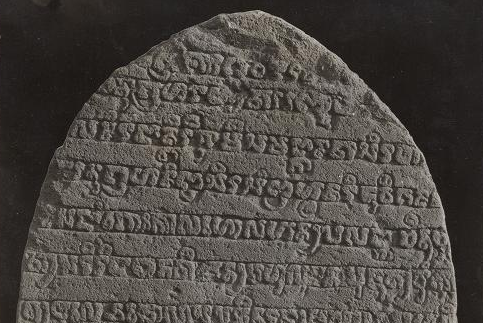
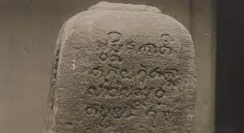
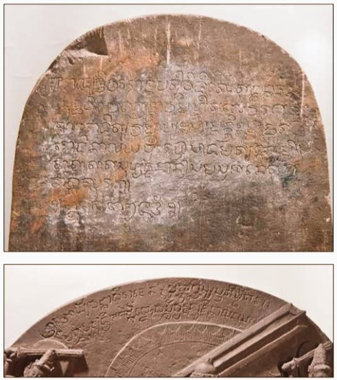

Prasati Manjustri
Prasasti Manjustri : Harmoni Seni dan Kebijaksanaan dari Zaman Majapahit
Prasasti Manjusri merupakan manuskrip yang dipahatkan pada bagian belakang Arca Manjusri, bertarikh 1343, pada awalnya ditempatkan di Candi Jago yang berlokasi di Desa Tumpang, Kecamatan Tumpang, Kabupaten Malang, Jawa Timur. Candi Jago, atau disebut juga Candi Tumpang atau Candi Jinalaya (pura), merupakan tempat asalnya arca Manjusri ini.
Candi tersebut mula-mula didirikan atas perintah raja Kertanagara untuk menghormati ayahandanya, raja Wisnuwardhana yang mangkat pada tahun 1268. Prasasti ini sekarang tersimpan di Museum Nasional dengan nomor inventaris D. 214. Berdasarkan tafsiran Bosch dari tulisan pada prasasti tersebut, kemungkinan Adityawarman mendirikan candi tambahan di lapangan Candi Jago tersebut, atau mungkin pula candi yang didirikan tahun 1280 sudah runtuh dan digantikan dengan candi baru. Tidak adanya sisa-sisa bangunan besar di samping Candi Jago yang sekarang, sehingga menunjukkan penjelasan yang kedua lebih masuk akal. Hal ini didukung pula oleh gaya relief dan ukiran pada candi tersebut, menurut analisis Stutterheim, membuktikan bahwa candi yang sekarang ini lebih baru daripada abad ke-13.
Karakter Manjusri dianggap sebagai personifikasi dari kebijaksanaan transenden. Dia duduk di atas takhta berhiasan teratai yang gemerlapan, pada tangan kirinya ia memegang sebuah buku (sebuah naskah daun palem), tangan kanannya memegang pedang (yang bermakna untuk melawan kegelapan), dan pada dadanya dilingkari tali. Ia juga dikelilingi oleh empat dewa, yang semuanya bermakna replika dirinya sendiri.
Foto Prasati Manjustri
Foto 1
Foto 2
Dengan megahnya Prasasti Manjustri yang memancarkan kebijaksanaan dan keindahan seni, kita diingatkan akan warisan budaya dan spiritualitas yang kaya dalam mitologi Nusantara. Prasasti ini bukan hanya sekadar benda bersejarah, melainkan jendela yang membuka ruang untuk merenung, belajar, dan menghargai harmoni antara tradisi masa lalu dan kreativitas masa kini. Melalui desainnya yang unik, Prasasti Manjustri menjadi saksi bisu dari perjalanan spiritual, mengajak kita untuk mengeksplorasi kebijaksanaan dalam setiap detailnya. Sebagai bagian dari pewarisan budaya, prasasti ini tidak hanya menyimpan kisah lalu, tetapi juga menginspirasi kehidupan dan pemikiran kita di masa sekarang.
sumber : https://id.wikipedia.org/wiki/Prasasti_Manjusri